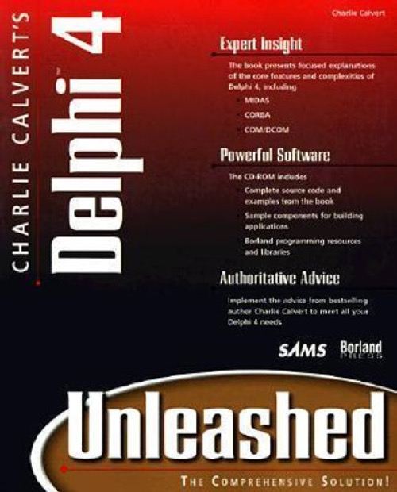

Delphi 4 Unleashed
Published by : Sams
Writed by : Charles Calvert
Published date : 01/11/1998
ISBN-10 : 0672312859
ISBN-13 : 9780672312854
Language :  English
English
Web site : http://www.drbob42.com/books/unleash4.htm
About Delphi 4 Unleashed
Charlie Calvert s Delphi 4 Unleashed is an all-new edition written by one of the most well-known developers in the Delphi community. This advanced reference will provide programmers with the information they need to build high-end Delphi applications and components compatible with ActiveX and Java. Calvert will bring the newest technologies and features of Delphi into focus and show programmers how to utilize them. Some features will include: Building and integrating components with Java, Active X, etc. Internet enabling applications and components? Internet and Intranet applications and enabling Delphi s Multi-tier Distributed Applications Services Suite (MIDAS) and how it works with Delphi Client/server architecture and enterprise wide development Note: Content for the book and CD will be all new.Charlie Calvert s Delphi 4 Unleashed is a complete high-end reference for programmers and developers in Delphi.Charlie Calvert is well-known and well-respected in the Borland and Delphi communities.This book will tell programmers what the manuals don t- and how to make Delphi 4 really work for them.
Where to buy ?
This book has the ISBN13 "9780672312854".
If it is still available for sale, you can order it in your favorite bookstore, by its publisher or online at
Amazon CA,
Amazon FR,
Amazon JP,
Amazon UK or
Amazon USA depending on your country.
Table of content
PART I - GETTING STARTED
CHAPTER 1 - PROGRAM DESIGN BASICS
The Structure of This Book
The Sample Programs
Creating Well-Designed Programs
Notes on the Text of This Book
A Note to the Reader
Summary
CHAPTER 2 - IDE AND VCL ENHANCEMENTS
Dockable Toolbars
Working with Tool Windows
Working with the Code Explorer
New Tools Found in Delphi 4
Docking Windows
Action Lists
Function Overloading
Dynamic Arrays
The implements Keyword
Summary
CHAPTER 3 - POLYMORPHISM
Polymorphism from 20,000 Feet
Polymorphic Assignment Compatibility
Virtual Methods and Polymorphism
Polymorphism in the VCL
Summary
CHAPTER 4 - EXCEPTION HANDLING
How I Approach Exceptions in the Chapter
The Theory Behind Exceptions
Exception Classes
Basic Exception Syntax
Raising Exceptions
Creating and Raising Your Own Exceptions
Reraising an Exception
try..finally Blocks
Streams, Exceptions, and Freeing Memory
Replacing the Default Exception Handler
Using Resources to Track Error Strings
Summary
CHAPTER 5 - THREADS
Processes and Memory
Threads: A Simple Example
One Program, Multiple Threads
Working with Mutexes
Threads and the VCL
Thread-Safe Database Access
VCL Thread-Safe Objects
Using the TThread Object
Setting a Thread's Priority
Delphi Threads Revisited
Summary
PART II - CREATING COMPONENTS
CHAPTER 6 - CREATING COMPONENTS: PART I
Component Theory
Creating Descendants of an Existing Component
Packages: Placing a Component on the Component Palette
Extending the Unleash Unit
Creating a Truly Useful Component
Summary
CHAPTER 7 - CREATING COMPONENTS: PART II
Building Components from Scratch
The Clock Component
Creating Icons for Components
The Tools API: Property Editors and Component Editors
Nonvisual Components
The FindAllW Program
The CompDirs Program
TCCPickDirDlg
Component Templates
ActiveX Controls
Summary
PART III - DATABASE PROGRAMMING
CHAPTER 8 - FIELDS AND DATABASE TOOLS
Getting Started with Relational Databases
Simple Set Logic: The Basis of Relational Databases
Rule Numero Uno: Create a Primary Key for Each Table!
Using Database Tools to Explore and Manipulate Tables
The Fields Editor
Calculated Fields
TDBGrid at Runtime
Working with TDBGrid Columns
Lookup Fields
Multirecord Objects
Summary
CHAPTER 9 - FLAT-FILE REAL-WORLD DATABASES
The Sample Program in This Chapter
Designing an Application
Defining the Program's Appearance
Lookups: Working with the Category Field
Setting Up the Command Structure for the Program
Examining the "Rough Draft" of an Application
Creating Your Objects
Creating a Finished Program
Moving In and Out of Read-Only Mode
Sorting Data
Searching for Data
Filtering Data
Marking Files
Setting Colors
Working with the Registry
The Clipboard: Cut, Copy, and Paste
Summary
CHAPTER 10 - RELATIONAL DATABASES
Data in the Real World
Examining the Relational Address Program
The Code for kdAdd
Inserting Data and Canceling Operations
Using the kdAddExplore Program
Summary
CHAPTER 11 - WORKING WITH THE LOCAL INTERBASE SERVER
Getting Started with InterBase
Creating Databases
Exploring a Database with WISQL
Transactions
Cached Updates
Many-to-Many Relationships
Security and the InterBase Server Manager
Summary
CHAPTER 12 - INTERBASE PROGRAMMING
About the Music Program
Designing the Music Program
Creating Indices on the Music Table
Generators, Triggers, and Stored Procedures
Server-Side Rules Versus Client-Side Rules
An Overview of the Interface for the Music Program
Working with Child Forms
The Code for the Music Program
Working with Data in the Music Program
Asking the Database a Question: An Abbreviated SQL Primer
Summary
PART IV - COM
CHAPTER 13 - INTERFACES AND THE BASICS OF COM
Understanding COM Interfaces
An Introduction to Interfaces
The Theory Behind Interfaces
Creating and Using COM Interfaces
Advanced Interface Issues
Summary
CHAPTER 14 - TCOMOBJECT, TTYPEDCOMOBJECT, AND TYPE LIBRARIES
Sample Programs
TComObject
Putting Commonly Used Interfaces in a DLL
Type Libraries and Querying Objects
Summary
CHAPTER 15 - CREATING COM AUTOMATION SERVERS AND CLIENTS
Understanding OLE Automation Clients and Servers
Building a Simple COM Server and Client
IDispatch, Dual Interfaces, and Dispinterfaces
Type Libraries
Ignoring Parameters with EmptyParam
Registration Issues
Marshaling Data Automatically
Getting Two or More Interfaces from One CoClass
Summary
CHAPTER 16 - USING DELPHI TO AUTOMATE WORD AND EXCEL
System Requirements for Automating Office Applications
Getting Started with Delphi and Excel
Understanding Excel Automation Objects
Sharing a Chart Between Excel and Word
Copying Data from Excel to Word
Summary
PART V - INTERNET
CHAPTER 17 - INTERFACES AND INTERNET EXPLORER
Comparing Variants and Interfaces
Files Needed in This Chapter
Working with Word and Excel
Working with IE and TWebBrowser
Placing an ActiveX Control Within a Browser
Summary
CHAPTER 18 - THE WEBBROKER: CGI AND ISAPI
Web Modules
Web Server Application Wizard
WebBroker Components
IntraBob
TPageProducer
TDataSetPageProducer
Browsing State
Advanced Page Producing
TDataSetTableProducer
Database Web Application Wizard
TQueryTableProducer
Summary
CHAPTER 19 - WININET AND FTP
Understanding WinINet, FTP, and TCP/IP
Some Notes on Installing TCP/IP
FTP Using WinINet
Using the FTP Control in a Program
Summary
PART VI - DISTRIBUTED PROGRAMMING
CHAPTER 20 - DCOM
COM and Distributed Architectures
A Simple DCOM Client and Server
Revisiting the SystemInformation Program
Lightweight Remote Datasets
Program Data and Automation Data
Testing the Remote Debugging System
Summary
CHAPTER 21 - MIDAS
An Overview of Multitier Computing
Technology Details: Using Distributed Datasets
Building a Simple MIDAS Application
Building a One-to-Many Application
Building a Remote Data Client Application
Error Handling
Server-Side Logic Versus Client-Side Logic
Required DLLs
Using OLEnterprise
Summary
CHAPTER 22 - ACTIVEFORMS
Introduction to ActiveForms
Building an ActiveForm
Deploying an ActiveForm for Use in Internet Explorer
Working with CAB Files and Packages
Running an ActiveForm in Word
Using Templates with ActiveForms
Sockets and ActiveForms
Summary
CHAPTER 23 - MTS
What Is MTS?
How Do I Install MTS?
Creating a Simple MTS Server
Creating a Simple MTS Client
Calling the Object Locally
Registering an Object with MTS
Calling the Object Remotely
Creating a Simple MTS Database Server
Creating a Simple MTS Database Client
Working with MTS Transactions
Building an MTS Example That Spans Multiple Servers
The Code for the Rocket Program
Summary
CHAPTER 24 - CORBA
Understanding CORBA
Two Important CORBA Repositories
Simple CORBA Objects
Understanding the IDL Interface to the Server
Simple CORBA Dynamic Project
Simple CORBA Database Objects
Working with the VisiBroker Manager and OSFind
Summary
CHAPTER 25 - DELPHI, JAVA, AND C++
Using CORBA with Delphi and Java
Calling a Java Server from Delphi
Calling a Delphi CORBA Server from C++Builder
Summary
PART VII - GAME PROGRAMMING
CHAPTER 26 - VCL GRAPHICS CLASSES
The Windows GDI and the VCL TCanvas
The VCL Makes Graphics Programming Easy
Working with TCanvas
Exploring and Using Brushes
Exploring and Using Pens
Exploring and Using Fonts
Exploring and Using TCanvas.PenPos
Exploring and Using TCanvas.ClipRect
Exploring and Using TCanvas.CopyMode
Exploring and Using TCanvas.Pixels
Exploring and Understanding the TCanvas Methods
MainBrush Sample Code
A Line by Any Other Name
Looking Deeper into the VCL
Palettes
An In-Depth Look at Image File Formats in Windows
Exploring TPaintBox and TImage
A Bit More About Bitmaps
Summary
CHAPTER 27 - DIRECTDRAW
Understanding DirectDraw
A Simple DirectDraw Program
Deallocating Interfaces
Smooth Animation
Working with Bitmaps
Game Resources
Summary
CHAPTER 28 - MORE DIRECTX TECHNOLOGIES
DirectSound
Creating a DirectX Game
A Brief Look at Direct3D
Key 3D Technologies
Summary
INDEX